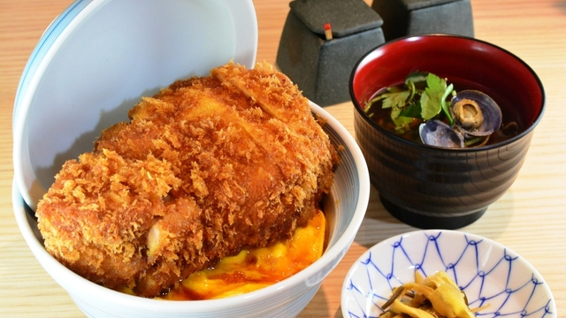

とんかつ丸七

がっつり食べたいあなたへ
有名な「閉じないかつ丼」で知られる丸七。厚くやわらかい豚に出汁と甘ダレの卵が絡み、ご飯が進む逸品。低温調理で仕上げた豚はサクサク衣をまとい、しっかりした食べごたえが魅力。
主なクチコミ
- かつ丼なのに「閉じない」発想が斬新。サクサク衣と卵の組み合わせが絶妙。
- 厚切り豚なのにやわらかくて、低温調理のおかげか脂っこさゼロ。
- お店の雰囲気も清潔で、女性客でも入りやすい。
- 門前仲町の裏通りにあって、隠れ家感が良い。
アクセス情報
東京都江東区門前仲町1丁目14-3
東京メトロ東西線・都営大江戸線「門前仲町駅」から徒歩約2分。
気分が変わった